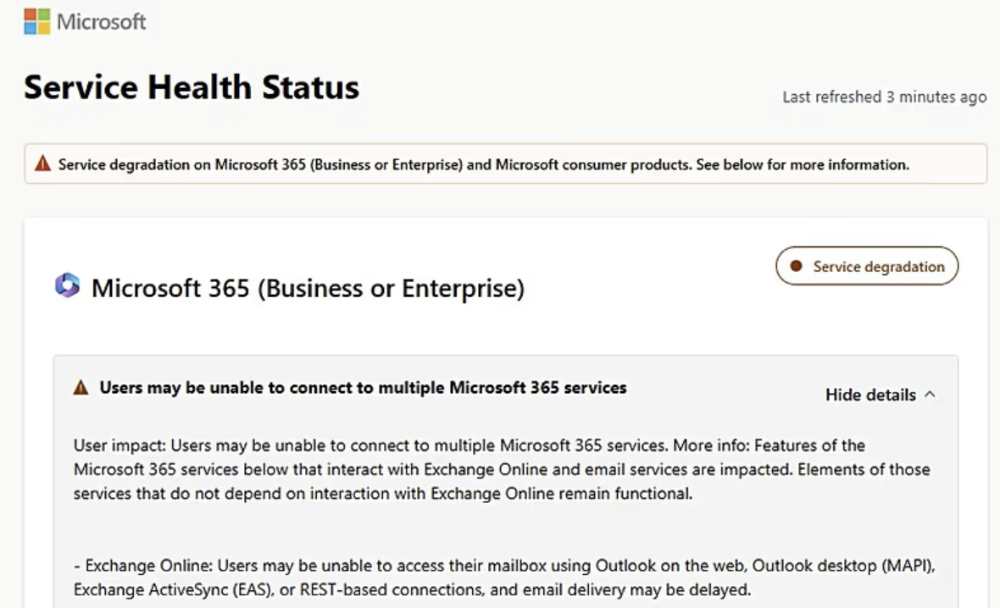

Una actualització causa la caiguda dels servidors de Microsoft
Publicat el 22/11/2026

Una actualització defectuosa ha provocat una caiguda mundial dels servidors de Microsoft que ha afectat al 80% de servidors, deixant serveis com outlook, office365 i azure caiguts durant més de 24h
Sectors afectats:
- Ibsalut
- CAIB
- Aena
"Ja estem treballant per solucionar el problema als servidors de Azure." - Comunicat de Microsoft
Més informació a la web oficial de Microsoft.